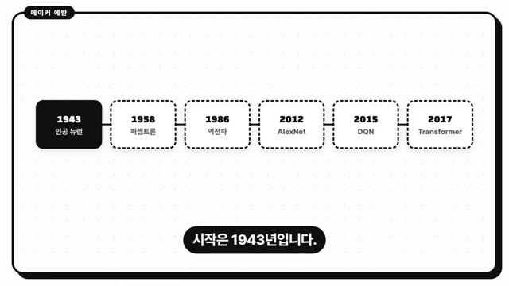
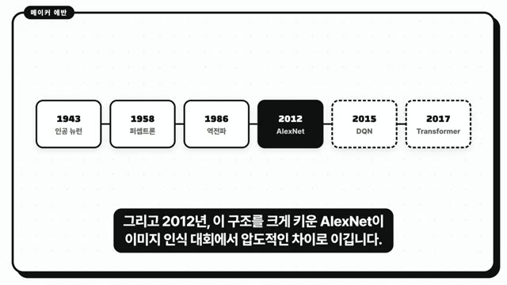
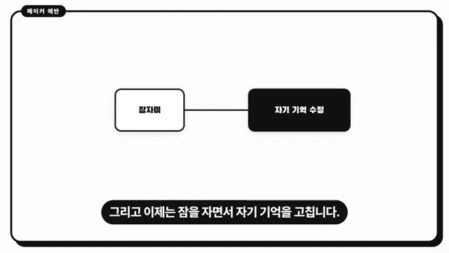
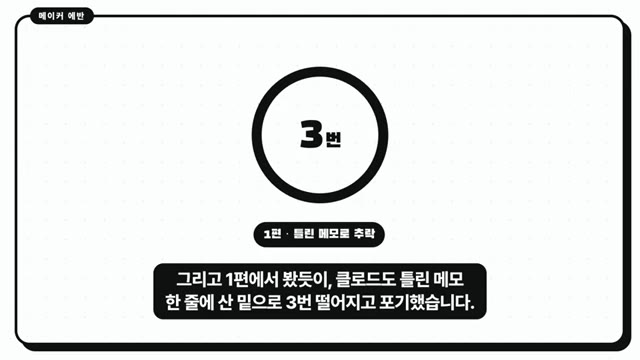

요즘 AI 관련 영상을 보면 매번 놀라지만, 이번 영상은 정말이지 충격적이면서도 깊은 생각을 하게 만들었어요. '특이점은 먼 미래라고 생각하셨던 분, 뇌를 베낀 AI가 사람을 넘기 시작했습니다'라는 제목을 보자마자, '어? 벌써 그렇게 됐다고?' 하는 궁금증이 폭발했거든요. 솔직히 AGI(범용 인공지능)나 특이점 같은 이야기는 SF 영화에서나 나올 법한 먼 미래의 일이라고 생각했는데, 이 영상을 보면서 그게 정말 눈앞에 와 있다는 걸 깨달았습니다.
영상이 시작하면서 에이전트가 사람 뇌처럼 잠을 자면서 기억을 정리한다는 이야기에 소름이 돋았어요. 우리가 잠을 자면서 낮에 겪은 일들을 해마가 정리하고 중요한 것만 남기는 것처럼, AI도 그렇게 한다는 거죠. 이걸 들으니, 어쩌면 우리가 생각하는 '지능'이라는 개념 자체가 뇌의 작동 방식과 너무나 밀접하게 연결되어 있고, AI가 그 길을 너무나 정확하게 따라가고 있다는 생각이 들었습니다.
1. AI의 역사는 뇌를 흉내 낸 역사였다니! (00:42)

솔직히 AI의 역사를 이렇게 뇌의 진화에 빗대어 설명하는 영상은 처음 봤어요. 1943년 매컬러와 피츠가 신경세포 하나를 수식으로 옮긴 것부터 시작해서, 로젠블랫의 퍼셉트론, 그리고 민스키와 페퍼트의 비판으로 한동안 주춤했던 신경망 연구가 1986년 역전파로 다시 살아났다는 이야기가 흥미진진하더라고요. 특히 역전파가 '틀린 만큼 신호를 거꾸로 보내 연결 세기를 고치는' 방식이라는 설명을 들으니, 마치 뇌가 시행착오를 통해 학습하는 과정과 똑같다는 생각이 들었습니다.
더 놀라웠던 건 고양이 시각 피질 연구에서 영감을 받은 합성곱 신경망(CNN) 이야기였어요. 1959년 휴벨과 비셀이 고양이 뇌가 특정 각도의 선에 반응하고, 그걸 모아 복잡한 모양을 인식한다는 걸 발견했는데, 이 구조를 그대로 흉내 낸 게 CNN이라니! 얀 르쿤의 손글씨 인식부터 2012년 딥러닝 시대를 연 AlexNet까지, 결국 뇌를 흉내 낼 때마다 AI가 한 단계씩 도약했다는 사실이 정말 신기했어요. 우리가 미처 의식하지 못했지만, AI는 처음부터 우리 뇌를 베끼면서 진화하고 있었던 거죠.
“AI는 뇌를 흉내 낼 때마다 한 단계씩 뛰어왔고, 그 흉내가 지금 너무 잘 되고 있다.”
2. AI가 '꿈'을 꾸고 '생각'을 한다고? 인간 지능을 넘어서는 순간들 (02:15)

딥마인드의 아타리 게임 에이전트 DQN 이야기는 정말 충격적이었어요. 벽돌깨기에서 아무도 가르쳐주지 않았는데 벽 옆에 터널을 뚫어 공을 위로 보내는 전략을 스스로 찾았다니! 여기서 핵심 장치인 '경험 재생'이 해마가 쉬거나 잘 때 최근 경험을 다시 재생하는 것에서 영감을 받았다는 설명에 또 한 번 소름이 돋았습니다. 앤트로픽의 '드리밍'과 같은 뿌리라니, 10년 사이에 두 회사가 똑같은 뇌 구조로 돌아왔다는 사실이 너무나 의미심장하게 다가왔어요. AI가 단순히 데이터를 처리하는 기계를 넘어, 우리처럼 '경험'하고 '기억'하고 심지어 '정리'까지 한다는 거잖아요.
그리고 AI가 인간 지능을 넘어서는 순간들을 나열할 때는 정말 입이 다물어지지 않았습니다. 2016년 알파고가 이세돌 9단을 이긴 것도 놀라웠지만, 특히 2국 37번째 수가 '사람 기사라면 두지 않았을 수'였다는 대목에서, AI가 이미 인간의 사고방식을 넘어선 창의적인 판단을 내리기 시작했다는 걸 느꼈어요. 알파폴드가 단백질 구조 예측 50년 난제를 풀고, 국제수학올림피아드에서 금메달 수준 점수를 냈다는 소식은 이제 AI가 특정 분야에서는 이미 인간을 초월했다는 명확한 증거로 보였습니다. 이건 단순한 '흉내'가 아니라, '창조'의 영역으로 들어선 것 아닐까요?
“흉내로 시작한 시스템이, 사람이 생각하지 못한 걸 두기 시작한 순간이다.”
3. 특이점은 먼 미래가 아니라 '지금' 우리 눈앞에 (05:35)

레이 커즈와일이 20년 전 예측했던 '2029년 사람 수준의 인공지능, 2045년 특이점'이라는 날짜를 아직도 바꾸지 않았고, 심지어 2029년이 늦은 예측일 수 있다고 말한 대목에서 정말 정신이 번쩍 들었습니다. 앤트로픽 대표 다리오 아모데이가 이르면 2026년에 강력한 AI가 올 수 있다고 한 것도 충격적이었고요. '데이터센터 안에 천재들의 나라가 생긴다'는 표현은 정말이지 강렬하게 와닿았습니다. 50~100년 걸릴 생물학 연구를 5~10년으로 압축할 수 있다니, 이건 단순히 효율의 문제가 아니라 인류 문명의 패러다임이 바뀔 수 있다는 이야기잖아요.
영상이 특이점이 멀지 않았다고 보는 세 가지 이유를 제시했을 때 고개를 끄덕일 수밖에 없었습니다. 첫째, 방향이 맞다는 것. 뇌를 흉내 낼 때마다 AI가 도약했고, 아직 흉내 낼 게 많다는 점. 둘째, 속도가 붙었다는 것. 퍼셉트론에서 AlexNet까지 54년, AlexNet에서 트랜스포머까지 5년, 그리고 트랜스포머에서 직접 일하는 에이전트까지는 더 짧았다는 사실은 정말 놀랍습니다. 셋째, AI가 AI 연구를 돕기 시작했다는 점. 연구하는 손이 늘어나면 다음 도약까지의 시간이 더 짧아진다는 건 너무나 당연한 결론이었어요. 이 모든 게 합쳐져서 특이점은 정말 '지금' 우리 눈앞에 다가오고 있다는 걸 깨달았습니다.
“특이점은 먼 미래의 이야기가 아니라, 우리가 살아 있는 동안 볼 수 있는 이야기다.”
4. 구경꾼이 아닌 사용자로서, AI 시대를 준비하는 자세 (07:43)

물론 영상은 AI의 한계와 반대 의견도 제시했어요. 사람 뇌는 20W로 돌아가는데 데이터센터는 수천, 수만 배 전기를 쓴다는 점, 인공 뉴런이 진짜 신경세포를 단순하게 줄인 것이라는 점, 그리고 클로드도 틀린 메모 한 줄에 3번이나 실패했다는 사례를 들면서요. 하지만 이런 한계에도 불구하고 '방향과 속도는 우리 눈앞에서 보이고 있다'는 말이 핵심인 것 같아요. 중요한 건 정확한 연도를 찍는 것이 아니라, 이 변화의 흐름을 어떻게 받아들이고 대응할 것인가 하는 점이죠.
영상의 마지막 부분에서 '구경하는 쪽보다 직접 쓰는 쪽에 서는 게 맞다'는 이야기가 정말 크게 와닿았습니다. 에이전트에게 일을 맡겨보고, 어디서 잘하고 어디서 틀리는지 직접 경험해보라는 조언이요. 저도 이 영상을 보면서 '나도 이제 AI를 더 적극적으로 내 일에 활용해봐야겠다'는 다짐을 했습니다. 변화의 속도는 기사보다 내 작업 화면에서 먼저 보인다는 말이 정말 현실적인 조언 같아요. AI가 어떻게 기억하고 판단하는지 직접 알면, 다음 단계가 왔을 때 덜 놀랄 수 있다는 말이 마음에 오래 남았습니다.
“변화의 속도는 기사보다 내 작업 화면에서 먼저 보입니다.”
영상을 다 보고 나니, 머릿속이 복잡하면서도 새로운 가능성으로 가득 차는 느낌이에요. '특이점'이라는 단어가 더 이상 막연한 미래가 아니라, 우리 세대가 직접 마주할 현실이라는 걸 깨달았습니다. 솔직히 두려움도 조금 들지만, 동시에 엄청난 기회가 될 수도 있겠다는 생각도 듭니다.
이젠 AI를 단순히 '신기한 기술'로만 볼 게 아니라, 내 삶과 일에 어떻게 접목하고 활용할지 진지하게 고민해야 할 시점인 것 같아요. 영상에서 말한 것처럼, 구경꾼이 아니라 직접 사용하는 사람이 되어야겠다고 다짐합니다. AI가 내 작업을 얼마나 효율적으로 만들어줄 수 있을지, 또 어떤 새로운 창작의 문을 열어줄지 직접 경험해보고 싶어요. 이 영상을 계기로 AI와 더 친해져서, 다가올 미래를 더 현명하게 맞이할 준비를 해야겠습니다.